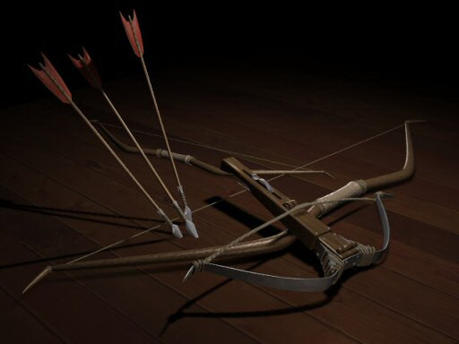
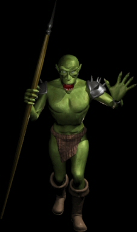
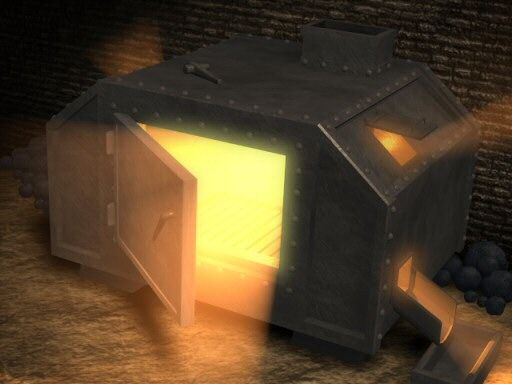

")
Issue 26 - Saradomin Preaches
Topics of note in this edition of the letters include: the difference in bows, the levels of enemies, the weight of armours, and the fate of holiday items.
Read on to find out more...
Greetings once again, esteemed disciples of order! I have been very busy recently, ensuring that peace is kept throughout my lands after some recent attempts by the foul Zamorak to outdo me, but let me assure you all that I am in the peak of health, and no matter how busy I might get I can always spare the time to share my wisdom with the curious! With this in mind, let us explore what knowledge my followers desire of me in this edition of the letters...
Dear Saradomin,
In the skills help, i couldn't find the difference of what short-bows, long-bows and cross-bows do. Maybe i missed it somewhere. If you could tell me where i might be able to find the differences, it would be greatly appreciated. Thank you for your time.
A confused archer,
Plutese

Allow the wisdom of Saradomin to illuminate your ranging life; each weapon has it's own seperate advantage depending on the purpose for which you wish to use it.
Those concerned with a speedy attack would be well advised to make use of the shortbow, those seeking long distance in their attacks should claim the longbow as their own, with its unparalleled reach of damage, and those wishing to offer themselves more protection than a ranger can usually afford will admire the one handed use of the crossbow, for it allows them the additonal benefit of wearing a shield while fighting, and advantage that bows cannot offer.
Many dragon slayers swear by the use of the crossbow in their hunting, for it allows them to wield the mighty anti-dragonbreath shield to withstand the flames of the dragon, even at close range.
hi saradomin!
my name is lucata, and i have just started my subscribtion for a members account, i have a question and i hope you answer.
if i last saved my game in a members area, and then my membership runs out,
what happens when i trying to log in to a non-members server?
If your tithe is left unrenewed while standing in a members area, be aware that the council have enlisted the aid of some specialist mages to prevent people from wandering into the protected lands without paying their tax. These mages will ensure that should such an event occur, the poor unfortunate whose finances have taken a turn for the worse will find themselves dispatched at once to Lumbridge with whatever items they have intact (albeit inaccessible due to the binding spells placed upon such 'members items').
Dear Saradomin
I was just wondering how you get your bald head so very shiny? Do you use wax or some other mortal product because the light really shines off of it, can zamorak and guthix see their faces in its shiny goodness?
From
Y2d3
Ah... I suspect you are mocking me for my lack of hirsuteness, but the glow that mortals often feel when gazing upon my glorious visage is none other than the glory of my wisdom, which shines upon me like a summers day.
I would also like to point out that in many cultures a balding head such as my own is recognised as both a symbol of wisdom and virility, both of which being attributes I have blessed myself with.
I dont know of anyone who has made a good living through being "nice" and "kind", unless you count a few handouts here and there. Destroying creatures and other players is the only fast and smart way to make your profit. There are more killers than there are workers, why can't you see that zammy is truly superior? If you believe in so much peace and wisdom why does your spell destroy others with lightning?! Your truly not fit to be a God... If you and your better half (zammy) were to join forces you could create chaos throughout the land and wilderness as far as anyone could see! You could overthrow that flying bobble head and be truly great. If you do not join forces, why don't you come down to our realm and finish each other off to prove who is superior? You could even make a profit by charging cash to see the clash.
Take the idea to heart,
l1ttl3 d3v1l
Oh, the sad mercenary wiles of the Zamorakians never fail to cause me dismay...
Those who follow my cause do so for they know the wisdom of bringing peace and prosperity to this land! As the saying goes, a good deed is its own reward, and those who choose to sacrifice their own personal wealth for the benefit of the greater good may not achieve much in the way of material wealth, but they will more than make up for this in the esteem with which they will be held, and the friends which they will make.
Compare this to the way of the Zamorakian; yes, they may have wealth through their ill gotten gains, and murders in the wilderness, yet they live a life of hardship and mistrust. Who can they really trust? Other Zamorakians, just waiting for their opportunity to relieve them of their riches for themselves?
Travel with honour and mercy, and you will walk tall indeed.
Not so dear Saradomin,
I am getting quite bothered by your constant lies about your roll in Runescape. In your last letter you said "although i did not create the world (runescape) , it is my creation nonetheless" I mean come on Saradomin, even though im a deicated follower of lord Zamorak I still know that Guthix is the one who used his immense power to create our world. You constantly pull the wool over your followers eyes and cover up your true power greedy nature by acting kind and caring. We are not stupid Saradomin....and soon even your followers will realize your true goal of rising to great power by spinning spiderwebs of lies. I know my lord Zamorak is a questionable fellow but at least i can trust him not to lie to me.
Power through Chaos (and truth),
Arouv
Ah... but have you questioned whatever motives Guthix himself might have, to slander me so outrageously? Would you give him the credit for the peace that mostly reigns upon this world for his contribution of sleep?
I call this world my creation, for the value system of honour, and courage, and mercy, and wisdom are attributes that I brought to this once barbaric land! It is true, I did not physically create the raw material of this world, but I have shaped and sculpted it into the glorious land that it is today!
When a smith forges a blade, is that not their creation, even though they did not create the ores which they used in doing so? I am the smith, and you are all my ores...
I will smelt you in the furnace of purity, and strengthen your souls on the anvils of honour, so that you may serve me as my weapons against the evil that strives to destroy this land.
Dear butt-head (Saradomin)
I am a proud zamorakian and will crush your holiness, but zamrok does not have much wisdom, so i ask this of you...
1) i was thinking of becoming a member, but cannot sadly get my parental units to fund it, any ideas on getting the money, monkeyboy?
2) does guthix want a certian amoutn of un-balance to blance out his balance or is just another god of an element raised up by mis-thought and treachery, wich by the way would possible get him quite a few zamorakian warriors on his side?
3) do you really chew bananas as you sleep and stuff peanutbutter in your pillow for comfort? ( just a silly romour that is quite hilarius acually)
4) Are they true, i mean the rumours of an all out war on another continent of the world of runescape?
your deathbringer,
iggyshark
I laugh as even Zamoraks followers recognise him for the oafish fool he really is! All who dwell here know of the wisdom of Saradomin!
As for your questions, strange as they are;
1) I suggest you embark on a quest, for as all adventurers know, a solid quest can often result in some small degree of wealth.
Suggestions that spring to mind include the 'car-washing' quest, or the 'extra-chores' quest; speak to the keepers of the treasure, and see if there is some small quest you may undertake for them in return for a little financial reward.
2) The ever-boastful Guthix has strange desires indeed, and I must confess, his philosophies are something of a mystery to myself.
He often claims to be working towards some 'greater good', yet he allowed (and even encourages!) great evils to be permitted in his name! I suggest you ignore whatever he tells you and listen only to my wisdom instead.
3) I have no time to sleep, I am a busy deity! As such I have no pillows, but I do indeed enjoy bananas, fresh from Karamja.
4) I take little interest in the pagan lands that do not recognise my glory, but judging from the deities they choose to worship it would surprise me little if they are embarked in some foolish war or other.
I know traders are constantly trying to reopen the closed trade routes between the various continents, but I suspect they will meet with some resistance.
Honorable Saradomin, Guthix, or Zamorak (Whoever happens to answer this letter)
I have noticed for some time that the levels of various monsters in the game has been altered. For example, black knights were formerly level 46(in Classic), and now are level 31(in RS2). Why is this? Is there a different formula for monster levels now?Is the game just being made easier for weaker players?
Thanx
-Sora PKer

Many of the foul Zamoraks creatures hid their true powers before, or showed a level that did not match their true abilities; since the world has been renewed however,they now more accurately reflect their abilities.
Some creatures are not as powerful as they once appeared, and yet others who were stronger than their level implied have gained a few levels since this update. You may notice that the same holds true for certain players as well.
Dear Saradomin,
As a curious follower of yours I would like to increase my wisdom, and I believe that you can help me. I believe you have heard of the gnome pilot who flies the glider in the grand tree quest? Well I was wondering: when he asks you where you want to go and the screen pops up with the pictures, there are words there identifying the pictures, but what language are they in? Certainly not English right? Are they in a gnome tounge? I hope you can extend my wisdom and answer this question.
MathWiz20
As I understand it, the gnomes speak their own tongue, yet are also fluent in the common language used by humans within the world, allowing communication to be made between the races.
O great Saradomin,
I know that you are able to find planks in the Graveyard of Shadows in the wilderness, but I was also wondering if you could find them somewhere besides the graveyard in the wilderness and other citizens of RuneScape,
Your loyal follower,
dragonfan2k4
Planks are a strange thing to search for indeed, but allow me to reveal to you that you may find planks lying around carelessly to the north of the Barbarian outpost, and may also find them for sale in a shop located in Mort'ton.
The Wilderness is still the preferred location of many players to source their building supplies, however.
Hello, this is me again, fox_mcloud11, writing another letter that probably wont be published. Well, there is something that always troubles me when i read the newsletter. You refer to the monthly payment to go into the "Rich land" as a tithe. The dictionary definition for the word "tithe" is
"A tenth part of one's annual income contributed voluntarily or due as a tax, especially for the support of the clergy or church."
Now, I have noticed many times that you have said that you do not care about human's possesions, especially money. So, who does the tithe go to, you or Jagex? If it is to Jagex, wouldn't the word "tithe" be a bit innapropriate? And, in your eyes, what is Jagex? They are the ones who always add items, events, quests, locations, and other things to the game. They are humans, and do all this, while you are a god, and you do nothing except for answering questions! Once more, strength through wisdom (though i do not consider you a god), my strength AND wisdom would increase considerably if I could have answers to my questions. Thank You for your time,
fox_mcloud11
The council, often referred to by their citizens as jagex, are those who impose taxes upon the land and divide the lands amongst the rich and the peasantry.
Rest assured, they do not often squander the taxes they demand of their citizens, but usually spend it on hiring the many workmen and oddjobsmen required to keep all of the cities in full working order.
I of course require no tithe to honour me, and you may begin showing your praise to a higher power (myself) any time that you wish!
o mighty and powerful saradomin
one question that has been troublin me lately is the fact of the holiday drop items rumor has it that there will be no more holiday drop items and if this is the case why is that . but i seem to believe form inside sources that there will be a holiday drop item. please help me and swer this question
Ilibil
Although I usually pay no mind to the fickle gossip of rumour-mongers, in this case you have heard correctly, the appearance of random items across the lands on certain holidays is indeed a thing of history.
This is not to say that the council have not put other plans into effect for future holidays...
Dear oh-so-great and spectacularly wise Saradomin,.
It is I, your humble liege who requires some assistance. I humbly request an answer to my important question, as I am absolutely stumped by a little problem concerning some logic within this mortal realm.
I have been working on the fine crafts of metalworking, and could not help but notice an anomaly I fail to understand.
Why, oh why does full chestplate armor weigh more than the 5 standard-sized metal bars that are required to fashion this spectacular defensive vest?
I have spent time thinking of why this should be, but unfortunately I have failed to find any reasoning, despite my flawless logical thinking. Could you divine the answer to this puzzling issue? Or perhaps this is a more fitting question for Lord Guthix or Zamorak?
Signed,
Hitman 1988.

When heated, the armour takes on a degree of the impurities in the air (and in the furnace itself - you would be surprised at how much detritus a furnace in a busy modern city may accumulate over the years!) and gains a degree of weight in the process of converting it into a usable weapon.
Lord Saradomin,
As you declared to us in your last letter,
"Oftentimes change comes slow, but when the more adventurous members of the Council gain enough power to reopen the trade and shipping routes against the wishes of their more conservative brethren then these lands will once more be visitable by players, along with new trials and tribulations to overcome. "
One might assume from this that at one point in the distant past, long forgotten lands were once open to us. How did it come about that they were shut, lost beyond recall? Reldo has said nothing of these lands to anyone, and it would seem there is a great mystery to the story. Did the Wilderness War beget this sundering? Alas, there are little or no records of this conflict - only the scorched and blasted ruins in the north. I beseech you, Lord Saradomin, reveal to us more of the long-ago Wilderness War, and of what has become of the other peoples of this world.
Your servant,
Arkanor
The loss of such lands is a more recent event than the god wars, for there was a political dispute amongst the ruling houses some 30 years past, where such barriers were erected. Most of the causes have now been forgotten, if not forgiven, of the insults to the great houses, and as such the routes are now slowly being restored, but the healing process of mortals can be a slow one...
And so with my duties to my loyal fans fulfilled, I shall leave you once more, to ponder on the wisdoms I have shared. But take heart, for I shall return very soon, and bring more illumination to you all with my presence!
Always remember to walk the path of honour, and to show wisdom in all of your actions; in this way you will carry my light in your hearts, and find the peace of order in my glory!
Until next time...
Strength through wisdom,
Saradomin
DISCLAIMER: The views of Saradomin do not reflect the views of Jagex Ltd or it's employees. We tried to stop him saying anything controversial, but he is a god.

More articles in
God letters
|
|